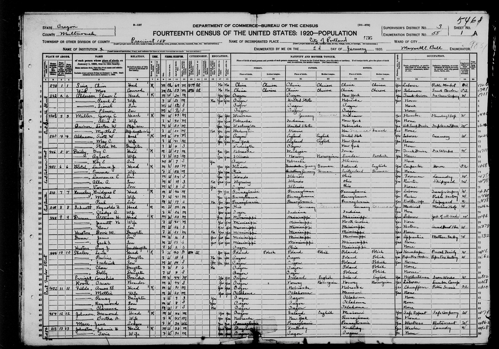
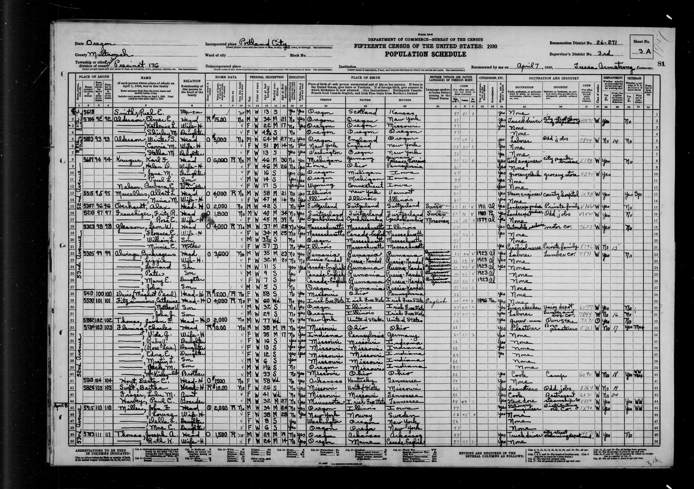

Estella May Alderson 1916–2008
Peter's grandmother.
Also recorded as Phyllis (family name); Phillis May Barns (1916 birth index; probably her original birth record); Estella Hall; Phillis May Barns.
Estella May Alderson was born on 5 May 1916 in Seattle, King County, Washington, United States2,3,4,5, the daughter of Winter Scott Alderson and Carrie May Newman3,9,10,11. She married Charles Henry Hall on 11 May 1946 in Vancouver, Vancouver, Clark County, Washington, United States12,13. She married William S. Rowley on 30 Dec 1933 in Vancouver, Clark County, Washington, United States14. She died on 6 Jun 2008 in San Diego, California, California, United States (according to an online family tree)5 and was buried at Fairhaven Memorial Park, Santa Ana, Santa Ana, California, California, United States (according to an online family tree)5.
Family
- Parents
- Winter Scott Alderson 1866–1933 and Carrie May Newman 1878–1970 (adopted) adoptive
- Husband
- Charles Henry Hall 1920–2001 · married on 11 May 1946 in Vancouver, Vancouver, Clark County, Washington, United States
- Children
- Kathleen Diane Hall b. 1947 tradition
- James A. Hall tradition
- Charles Hall Jr. tradition
- Steve Hall tradition
- Dale Hall tradition
- David Hall tradition
- Susan Hall tradition
- Husband
- William S. Rowley b. 1914 · married on 30 Dec 1933 in Vancouver, Clark County, Washington, United States
Life events
| Event | Date | Place and details |
|---|---|---|
| Born | 5 May 1916 | Seattle, King County, Washington, United States2,3,4,5 |
| Born | 5 May 1916 | Seattle, King County, Washington, United States registered as Phillis May Barns; mother Irene Barns, father 'John Smith'; Seattle certificate 1743 (or 1763)1 |
| Lived | 21 Jan 1920 | Portland, Multnomah County, Oregon, United States5,7 |
| Lived | 7 Apr 1930 | Portland, Multnomah County, Oregon, United States8 |
| Lived | 1935 | Portland, Multnomah County, Oregon, United States According to an online family tree5 |
| Lived | 1940 | Concord Election Precinct, Oregon, United States According to an online family tree5 |
| Lived | 1949 | United States According to an online family tree5 |
| Lived | Jun 1950 | Portland, Multnomah County, Oregon, United States According to an online family tree5 |
| Lived | 1970 | Akron, Ohio, United States According to an online family tree5 |
| Died | 6 Jun 2008 | San Diego, California, California, United States According to an online family tree5 |
| Origin | Seattle, King County, Washington, United States According to the family's 2015 tree6 | |
| Buried | Fairhaven Memorial Park, Santa Ana, Santa Ana, California, California, United States According to an online family tree5 |
Records


Open questions
- A formal court adoption (Oregon or Washington) Unlikely
- Birth mother = Irene Mary Barnhart (b. 16 Aug 1900 Lynden WA) Probably
- Birth mother = Irene F. Barnes (b. 12 Dec 1894 MN; Portland 1910) Unlikely
- Birth mother = Ruth Irene Barnes (b. Dec 1896 OR; Portland 1900) Unlikely
- Estella = "Phillis May Barns", b. 5 May 1916 Seattle Confirmed
- Other WA girls born 3–7 May 1916 (near-misses) Unlikely
- SS-5: the parents Estella herself named Open
- Walker × Arbuckle as Estella's birth family (the DNA side) Probably
- Which Walker–Arbuckle line: Margaret (Barnhart), Olive Kirwin, Edith Ione Leonard Possibly
Sources
- Phillis May Barns, 5 May 1916, DGS 101140005 image 721, rec. 76; DGS 101140006 image 586, rec. 7.
652 Barns, Irene (M) Phillis May Barns (C) Seattle John Smith (F) 5-5-16 F W 1763 | 530 Smith, John Phillis May Barns Seattle Irene Barns 5-5-16 F W 1743
State birth index, two cards. (1) Filed under the mother: '652 Barns, Irene (M) / Phillis May Barns (C) | Seattle / John Smith (F) | 5-5-16 F W | 1763'. (2) Filed under the father: '530 Smith, John / Phillis May Barns | Seattle / Irene Barns | 5-5-16 F W | 1743'. Seattle certificate no. 1743 or 1763: the two cards disagree. Card 2 is clearer and reads 1743 (my reading; Claude Opus on a tight crop: 1, 7, 4 high certainty, final 3 moderate). Card 1 is blurred; my reading, two independent Claude Haiku passes and Claude Opus all give 1763.
- Peter's tree, danenberg.sql, 2007–2015, personae 119, birth.
- Estella - Newman - Alderson - Et Al., doh_db_00205057; Vol. 26, State File No. 342.
Estella May Alderson ... Female ... May 5, 1916 ... Seattle ... King ... Winter Scott Alderson ... Carrie May Newman ... * Affiant states she is the mother of the child stated. ** Affiant states she is the older sister of the child and lived in Seattle with her parents at the time of the birth. ... I certify that no prior certificate has been found for this registrant ... Filed at Seattle, Washington, on April 7, 1952
Delayed certificate filed 7 Apr 1952 (Vol. 26, State File No. 342). It names Winter Scott Alderson (b. Oregon, age 50) and Carrie May Newman (b. New York, age 38) as parents. Supporting evidence: (1) affidavit of Carrie May Schroeder, 1952, 'Affiant states she is the mother of the child stated'; (2) affidavit of Mrs. Lola Webster, 25 Mar 1952, 'Affiant states she is the older sister of the child and lived in Seattle with her parents at the time of the birth'; (3) Portland Public Schools transcript, 1922–1923 ('Scott Alderson', 'May Alderson'). Registrar's certification: 'no prior certificate has been found for this registrant'. Signed by Estella May Hall, sworn at Portland, 13 Mar 1952.
- Certificate of Live Birth: Phillis May Barns, State file number 146-1916-005906; filed 1916-05-12; issued 2026-10-22.
PHILLIS MAY / BARNS / MAY 05, 1916 04:30 AM / SEATTLE, KING COUNTY, WASHINGTON / IRENE BARNS / WASHINGTON / 18 YEARS / JOHN SMITH / WASHINGTON / 20 YEARS / MAY 12, 1916
Original birth certificate, state file no. 146-1916-005906, filed 12 May 1916: Phillis May Barns, female, born 5 May 1916 at 4:30 am, Seattle; facility unknown. Mother 'Irene Barns', born Washington, age 18. Father 'John Smith', born Washington, age 20. The state still issues it in the birth name (never amended for an adoption). See certificate-1916.md.
- FamilySearch Family Tree: Estella May Alderson (L51K-T7N).
- Peter's tree, danenberg.sql, 2007–2015, personae 119, provenance.
- S-fs-M487-BM7.
Alderson, Scott W | Head ... Oregon | England | United States; May C. | Wife ... 41 ... New York; Stella M. | Daughter | F W 4 S | Washington | Oregon | New York
1920 census, ED 58, sheet 1A, line 13: 'Stella M.', Daughter, F W 4, b. Washington; father b. Oregon; mother b. New York. Household of Scott W. Alderson (54) and May C. (41). Next door (line 3) is the adoptive brother Elmer E. Alderson, 24, with wife Pearl L. (née Quiner) and two infant sons.
- S-fs-XCSS-HWY.
1930 census, ED 26-271, sheet 3A, line 7: 'Stella M.', Daughter, F W 13, b. Washington; father b. Oregon; mother b. New York. Household of Winter S. Alderson (64; age at first marriage 27) and Carrie M. (51; age at first marriage 14). Next door (line 2) is Elmer E. Alderson with his second wife Katherine L.
- Peter's tree, danenberg.sql, 2007–2015, parentages 18.
- FamilySearch Family Tree: Estella May Alderson (L51K-T7N).
parent1Facts: none; parent2Facts: none
On FamilySearch, Estella (L51K-T7N) is linked to Winter Scott Alderson (L51K-5YQ) and Carrie May Newman (KGWM-KQ2) through relationship MBV4-L65, which has NO lineage type: it is not marked Adoptive and not Biological. The family says she was adopted. Every FamilySearch ancestor of Peter beyond generation 5, about 1,300 people back to the 1200s (Alderson, Royal, Newman, Brate, Cheesman, Stringham, Halsted, Schaeffer, English and Swedish gentry), therefore runs through her ADOPTIVE parents. Peter's biological lines on FamilySearch end at generation 3 (Danenbergs/Sirlaka) and generation 5 (Peter Hall, Peter McCabe: names only).
- Changes of Names and Adoptions, 1917 vol. pp. 986–996 (seq 998–1008); 1919 vol. pp. 892–906 (seq 898–912).
No Oregon court adoption of Estella is published. The 'Changes of Names and Adoptions' lists printed in the Oregon Laws were read for 1914–1916 (1917 volume) and 1917–1918 (1919 volume). They contain no Alderson as adopter and no 'Phillis', 'Barns' or 'Estella' as a former name. By law, county judges reported every adoption to the Secretary of State for these lists through 1918.
- S-fs-Q2ZV-1VF4.
To Charles H. Hall (25). Bride 30. Bride's parents: W. S. Alderson and Carrie M. Newman. Groom's parents: Charles H. Hall and Susan McCabe.
- FamilySearch Family Tree: Charles Henry Hall (L51K-5RF).
- S-fs-QPMN-ZW9T.
To William S. Rowley (19). Bride 17. Bride's parents: Winter S. Alderson and May E./May C. Newman. Groom's parents: William S. Rowley and Lillie Manney.